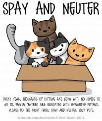

Spay and Neuter of Cats
Spaying helps prevent uterine infections and breast tumors, which are malignant or cancerous in about 50 percent of dogs and 90 percent of cats. Spaying your pet before her first heat offers the best protection from these diseases. Neutering your male companion prevents testicular cancer and some prostate problems.